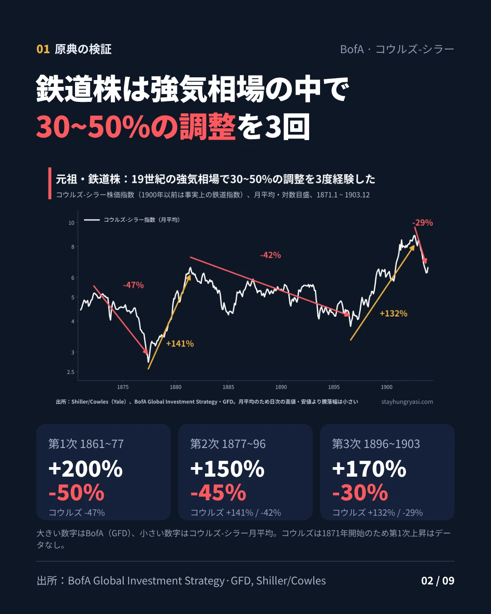
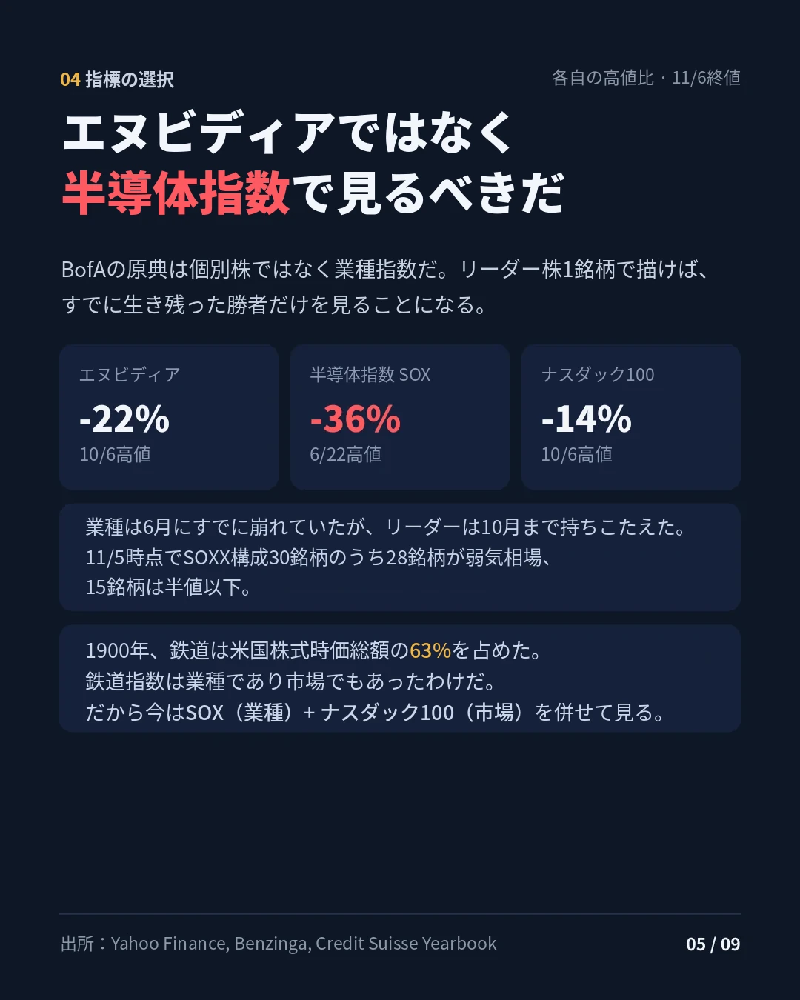

データ基準 2026年11月6日 米国通常取引終値 · 作成 2026年11月9日（韓国時間） · stayhungryasi.com
表記ルール：現代の株価はYahoo Financeの日次終値（指数）と調整後終値（個別株）から直接計算した。19世紀の数値はBofA・GFDの原典とシラー（コウルズ）の月次データを併記した。「解釈」は筆者の判断である。投資勧誘ではない。
19世紀後半（1800年代後半）の鉄道株と2020年代の半導体は、130年を隔てて、強気相場の中でほぼ同じ大きさで3度崩れた。本稿はそのリズムを実際のデータで再現し、鉄道がその後どうなったかまで追う。
要点を9枚にまとめた。画像をクリックすると拡大表示される。
BofAはGFDのデータでS&P 500鉄道指数を描き、19世紀後半の強気相場の中で起きた3度の大型調整を示した。この数値を、シラー教授が公開しているコウルズ長期株価指数（1871年開始）と照合した。1900年以前はニューヨーク証券取引所の時価総額の大半が鉄道だったため、この時期のコウルズ指数は事実上、鉄道単一の業種指数である（CFA Institute）。
| 局面 | BofA (GFD) | コウルズ-シラー（月平均） | コウルズ基準の高値・安値 |
|---|---|---|---|
| 第1次上昇 | +200% | データなし | 1871年開始 |
| 第1次調整 | -50% | -47% | 1872.4 → 1877.6 |
| 第2次上昇 | +150% | +141% | 1877.6 → 1881.6 |
| 第2次調整 | -45% | -42% | 1881.6 → 1896.8 |
| 第3次上昇 | +170% | +132% | 1896.8 → 1902.9 |
| 第3次調整 | -30% | -29% | 1902.9 → 1903.10 |
コウルズ-シラーは月平均値のため、日次の高値・安値より騰落幅が小さく出る。第3次上昇の差が最も大きいのは、1896年以降に産業株の組み入れが増えた影響と推定される。
BofAの原典は業種指数である。個別のリーダー株を当てはめれば、すでに生き残った勝者を選ぶことになり、絵が美化される。今回の調整で、エヌビディアは10月6日の高値比-24%（11月5日終値）だったが、SOXはすでに6月22日に天井を付け、-38%まで押し下げられた。11月5日時点でSOXX構成30銘柄のうち28銘柄が高値から20%以上下落した弱気相場にあり、15銘柄は50%を超えて下落していた（Benzinga）。業種が先に崩れ、リーダーが最後まで持ちこたえた相場である。
もう一つ手がかりがある。1900年初頭、鉄道は米国株式時価総額の63%を占めていた（Credit Suisse Yearbook）。当時の鉄道指数は業種指数であると同時に市場指数でもあった。だから今日は、業種（SOX）と市場（ナスダック100）を併せて見て初めて、原典と同じ構図になる。
| 調整局面（日次終値、高値 → 安値） | SOX | ナスダック100 | エヌビディア |
|---|---|---|---|
| 2020 コロナ | -35.0% | -28.0% | -37.5% |
| 2022 金利ショック | -46.5% | -35.6% | -66.3% |
| 2024~25 円キャリー巻き戻し・ディープシーク・関税 | -39.7% | -22.9% | -36.9% |
| 2026 現在（11/5安値まで） | -38.4% | -14.7% | -24.1% |
3つの指標の高値の日付はそれぞれ異なる。エヌビディアは株式分割・配当を反映した調整後終値である。
SOXの3つのサイクルを鉄道と並べると、調整幅は驚くほど似ている（-50/-45/-30 対 -46/-40/-38）。ただし2点は指摘しておく必要がある。第一に、SOXの第1次上昇はChatGPT公開以前の2020年3月のコロナ安値から始まっており、AIラリーというよりパンデミックのデジタルブームに近い。第二に、第3次上昇は鉄道（+170%）よりはるかに急だった（+311%）。ラリーが弱まって折れたのではなく、過熱の後に急落した形である（解釈）。

19世紀には、路線を敷いた鉄道会社が倒れ、レールを供給した側は生き残った。今回の調整の順序は異なる。市場が恐れているのは設備投資の減少であり、その資金を売上として受け取る半導体が正面から打撃を受けている。現金が豊富なハイパースケーラー（MSFT・AMZN・GOOGL・META・ORCL 均等加重、筆者構成）は6月1日の高値比-14.1%と、ナスダック100（-13.6%）並みに持ちこたえた。
鉄道時代に似ているのは、負債で設備を築くネオクラウドである。11月6日終値ベースで、CoreWeaveは高値比-74.7%、IRENは-71.7%、Nebiusは-54.8%だ。ガートナーは、2030年までにネオクラウドの80%以上が独立して生き残れないと予測した（Trending Topics）。1893年恐慌の際、米国の鉄道総延長の4分の1が管財人の管理下に入った場面と重なる（Panic of 1893）。
BofAのチャートは1903年で終わるが、リズムはもう一度繰り返された。コウルズ指数は1903年10月の安値から1906年9月まで約60%上昇し、1907年恐慌で11月まで約38%下落した（月平均）。その直前の1906年、ヘップバーン法により政府が鉄道運賃の上限を定められるようになった。指数は1909年末に新高値を回復した。ただし、1900年以降のコウルズ指数は産業株の比重が急速に高まっており、純粋な鉄道の成績とは見なしにくい。

本当の転換はその次だった。GFDによれば、1910年頃には鉄道が新たに拡張する場所はほとんど残っておらず、第1次世界大戦中には政府が鉄道を国有化した。鉄道株は1920年代に当時として史上最高値を付けたが、1929~32年に高値から90%超暴落し、100年前の1832年の水準を下回った（GFD）。
| 時期 | 鉄道に起きたこと |
|---|---|
| 1903~1907 | 第4次上昇 約+60%、1906 ヘップバーン法、1907 恐慌 約-38%（コウルズ月平均） |
| 1910年前後 | 鉄道網の拡張が事実上終了 |
| 1917~1920 | 第1次世界大戦中に政府が国有化 |
| 1920年代 | 鉄道株が当時として史上最高値 |
| 1929~1932 | 高値比-90%以上、1832年の水準を下回る |
| 1932~1942 | 1937年まで約5倍に反発した後に再下落、1942年に底 |
| 1956~現在 | 貨物・コンテナ輸送で復活、業界は少数の企業に統合 |
米国株式市場に占める鉄道の比率は、1900年の63%から1%未満に縮小した（EconLife）。それでも、1830~2023年の鉄道指数の長期リターンは配当込みで年8.3%だった。鉄道は滅びた産業ではなく、平凡な産業になったのである。
カルロタ・ペレスは、技術革命が金融の熱狂 → 崩壊 → 制度の再整備（転換点） → 実体経済への普及という順序で進むと見る。転換点では政治が介入する。鉄道では、グレンジャー法（1870年代）、州際通商法（1887）、ヘップバーン法（1906）がその役割を果たした。2026年のAIでも、ニューヨーク州が7月に大型データセンターに対する1年間のモラトリアムを（6sqft）、テキサス州が8月に電力網接続承認の一時停止を実施した（Jones Day）。11月の中間選挙直後には、データセンター規制への懸念の中でSOXが1日で-12.25%と、史上2番目に大きな下落を記録した（24/7 Wall St.）。ただし、ペレス本人はAIを新たな革命ではなく、1971年に始まった情報通信革命を完結させる技術と見ている。上記の当てはめは、彼女の枠組みを借りた解釈である。
資本の面でも、鉄道の後半期に似たシグナルがある。2026年のアマゾン・アルファベット・メタ・マイクロソフト・スペースXの設備投資は8,030億~8,280億ドルと予想されている（Hargreaves Lansdown）。アマゾンの直近12か月のフリーキャッシュフローは-424億ドル、アルファベットの第3四半期のフリーキャッシュフローは-91億ドルだった（Tech Insider）。一方でマイクロソフトは第三者のデータセンター容量の遅れを理由に2026年の設備投資見通しを引き下げ、他のビッグテックは2027年の投資をさらに増やすと表明しており、シグナルは交錯している。
鉄道が残した教訓は4つある（解釈）。強気相場の中の30~50%の調整は例外ではなく規則である。指数が回復しても、負債で建てた側から倒れる。成長の本当のピークは、敷く場所がなくなる「網の完成」の時点である。そして革新者も、やがて次の革新に座を譲る。鉄道の地位は自動車・トラック・航空が分け合った。
| 項目 | なぜ重要か |
|---|---|
| 11/17 エヌビディア第3四半期決算 | 設備投資の鈍化が実際の受注減少につながるかを見る最初のデータ |
| ビッグテックの2027年設備投資ガイダンス | 「網の完成」時点の先行指標。下方修正が広がるか |
| ネオクラウドの株価・信用 | 負債型運営会社の資金調達環境 |
| データセンター規制の立法 | モラトリアムが広がるか。鉄道規制と同じ転換点のシグナル |
| SOX 11/5終値 9,011 | これを下回って引ければ、調整が鉄道の第3次調整（-30%）を超えてさらに深まる可能性 |
現代の株価は、Yahoo Financeの日次終値（指数）と調整後終値（個別株）で2026年11月6日まで計算した。高値・安値は日次終値ベースであり、SOXチャートは週足終値に高値・安値の日付を加えて描いた。ハイパースケーラーのバスケットはMSFT・AMZN・GOOGL・META・ORCLの均等加重、日次リバランスである。19世紀の数値はBofA・GFDの原典とシラー/コウルズの月次データを併記した。
stayhungryasi.com · 情報提供を目的としたリサーチであり、投資勧誘ではない。過去のパターンや歴史的な類推は将来の収益を保証しない。投資判断とその責任は投資家本人にある。